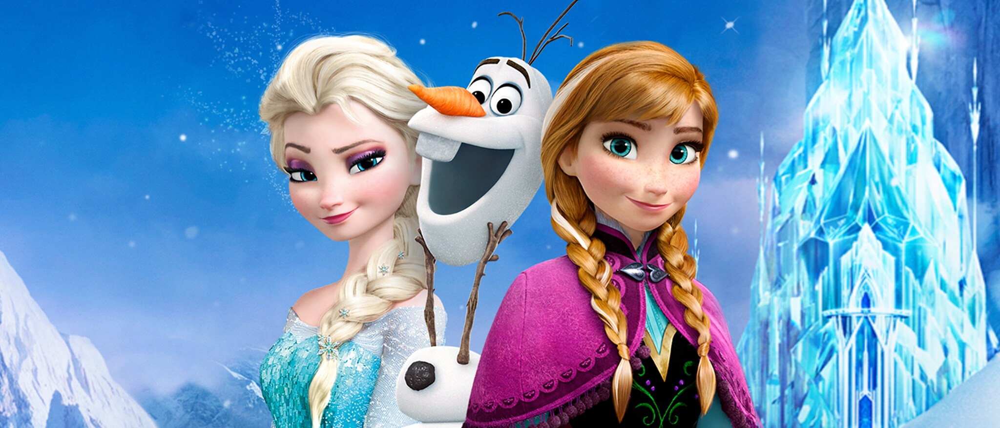

frozen é um filme onde mostra duas irmas que perderam os pais em um acidente de barco depois desse acidente elas se afastaram bastante e teve uma festa em que ellsa ficou muito nervosa e decidiu fugir e constroe um castelo de gelo
Frozen sempre atribui uma característica a algo que está nesse estado da matéria ou que representa a metáfora de algo congelado.
Frozen: Uma Aventura Congelante’ se tornou um verdadeiro fenômeno cultural. O filme da Walt Disney Animation Studios, lançado nos cinemas dos Estados Unidos em 27 de novembro de 2013, rapidamente conquistou o público de todo o mundo com duas irmãs cativante, um boneco de neve irresistível e… sim, aquela música que cantamos abertamente e em voz alta em mais de uma ocasião. Dez anos após sua chegada às telonas, ‘Frozen: Uma Aventura Congelante’ continua em alta entre fãs de todas as idades ao destacar temas como o poder do amor e da família, inspirando o público a nunca desistir e abraçar seus verdadeiros propósitos. Confira também dez fatos pouco conhecidos sobre a frente e os bastidores da inesquecível história de Anna e Elsa de Arendelle.
Frozen: Uma Aventura Congelante retoma elementos centrais de A Rainha da Neve, conto do célebre escritor dinamarquês Hans Christian Andersen, publicado pela primeira vez em 1845. Esta é a segunda vez que a Disney se inspira em uma história de Andersen para criar sua própria história. A PEQUENA SEREIA, clássica animação lançada em 1989, é inspirado no conto homônimo do renomado autor e está disponível no Disney+, assim como o remake live-action que acaba de estrear.
A história de A Rainha da Neve esteve em desenvolvimento na Disney Animation durante boa parte da sua história: 74 anos, mas nenhuma das versões idealizadas durante este longo período saiu do papel, porque os roteiristas não sabiam como fazer o público se relacionar com os personagens pouco críveis e desenvolver a personalidade abstrata da Rainha da Neve. O projeto foi revitalizado em 2011, quando Chris Buck foi escolhido para a direção e ficou decidido que a Rainha da Neve seria irmã da heroína (Anna), criando uma relação real para as duas personagens principais. Em 2012, Jennifer Lee assumiu o roteiro e codireção, e junto com as canções de Robert Lopez e Kristen Anderson-Lopez, seriam responsáveis por estabelecer uma personalidade humana para a Rainha da Neve, Elsa, que até então era uma vilã unidimensional. No fim deste ano, o título inicial The Snow Queen (A Rainha da Neve) foi alterado para Frozen. Frozen estreou em 27 de novembro de 2013 e foi recebido com aclamação pela crítica e público em geral. O filme foi considerado a melhor animação do estúdio desde a era do Renascimento da Disney. Arrecadou mais de 1,2 bilhão de dólares nas bilheterias mundiais. É o terceiro filme original (que não é continuação) de maior bilheteria, a terceira maior bilheteria na história do Japão, a maior bilheteria no mundo de 2013, a animação de maior bilheteria de todos os tempos e, até janeiro de 2021, a décima sexta maior bilheteria da história. Entre vários prêmios, venceu o Oscar de melhor filme de animação e melhor canção original ("Let It Go"), o Globo de Ouro de melhor filme de animação, cinco Annie Awards e dois Grammy Awards de Melhor Trilha Sonora Compilada para uma Mídia Visual e Melhor Canção Escrita para uma Mídia Visual ("Let It Go"). O filme gerou uma franquia de sucesso, com livros, jogos, quadrinhos, um show da Broadway com estreia para 2018, um spin-off em curta-metragem, Frozen Fever (2015), e uma sequência em longa-metragem chamada Frozen II foi lançada em novembro de 2019. Em pânico, Elsa foge do castelo, e sem querer desencadeia um inverno eterno no reino. No alto das montanhas próximas, ela liberta os seus poderes, construindo um palácio de gelo e decidindo viver solitária, e sem saber, dá a vida ao seu boneco de neve (e de Anna), Olaf. Enquanto isto, Anna sai em busca de sua irmã, determinada a levá-la de volta a Arendelle, acabar com o inverno e restaurar seu relacionamento. Quando faz uma pausa para conseguir mantimentos, ela conhece um homem da montanha chamado Kristoff e sua rena, Sven, e convence Kristoff para guiá-la até a montanha do Norte. Em sua jornada, o grupo se encontra com Olaf, que os leva ao esconderijo de Elsa
Elsa, princesa de um pequeno reino norueguês chamado Arendelle, nasceu com poderes mágicos com os quais ela é capaz de criar gelo, geada e neve. Uma noite, enquanto estava brincando, ela fere acidentalmente sua irmã mais nova, a princesa Anna. Seus pais chocados, o Rei e a Rainha, procuram a ajuda do rei Troll, que cura Anna e remove das suas memórias a magia de Elsa. O casal real isola as crianças em seu castelo até Elsa aprender a controlar seus poderes. Com medo de ferir Anna novamente, Elsa passa a maior parte do tempo sozinha em seu quarto, causando um afastamento entre as meninas à medida que crescem. Quando as princesas são adolescentes, seus pais morrem num naufrágio durante uma tempestade. Quando Elsa completa 21 anos, o reino se prepara para sua coroação como Rainha. Entre os convidados está o alemão Duque de Weselton, que procura explorar Arendelle para conseguir dinheiro. Animada para sair do castelo de novo, a princesa Anna explora a cidade e conhece o príncipe Hans das Ilhas do Sul, e os dois desenvolvem rapidamente uma atração mútua. Apesar do receio de Elsa, sua coroação ocorre sem incidentes. Durante a recepção, Hans pede Anna em casamento e ela aceita apressadamente. No entanto, Elsa se recusa a conceder a sua bênção e proíbe o repentino casamento. As irmãs discutem, culminando com a exposição dos poderes de Elsa durante uma explosão emocional
Anna e Elsa se encontram, mas ela ainda teme ferir a irmã. Quando Anna insiste para Elsa voltar, esta fica assustada e seus poderes saem do controle, e ela acidentalmente golpeia Anna no coração. Horrorizada, Elsa cria uma criatura de neve gigante, Marshmallow, para levar Anna, Kristoff e Olaf para longe de seu palácio. Depois que eles fogem, Kristoff percebe que o cabelo de Anna está ficando branco e deduz que algo de ruim aconteceu. Ele procura a ajuda dos trolls, sua família adotiva, que explicam que o coração de Anna foi congelado por Elsa. A menos que seja descongelado por um "ato de amor verdadeiro", ela vai se tornar gelo para sempre. Acreditando que apenas Hans pode salvá-la com um beijo do amor verdadeiro, Kristoff volta com Anna para Arendelle. Hans, indo encontrar Anna, chega no palácio de Elsa. Na batalha que se segue contra os homens do duque, Elsa é nocauteada e presa em Arendelle. Lá, Hans pede que esta desfaça o inverno, mas Elsa confessa que não sabe como. Quando Anna se encontra com Hans e pede que ele a beije para quebrar a maldição, Hans se recusa e revela que sua verdadeira intenção em se casar com Anna e seduzi-la é para tomar o controle do trono de Arendelle. Deixando Anna para morrer, ele acusa Elsa de traição pela aparente morte de sua irmã mais nova.[9] Elsa escapa e cria, sem intenção, uma tempestade de neve no fiorde. Olaf encontra Anna e revela que Kristoff é apaixonado por ela; eles, então, fogem para o fiorde para encontrá-lo. Hans confronta Elsa, dizendo-lhe que Anna está morta por culpa dela. Em desespero, Elsa faz a tempestade cessar de repente, dando Kristoff e Anna a chance de se encontrarem. No entanto, Anna, vendo que Hans está prestes a matar Elsa, joga-se entre os dois, quando ela congela, bloqueando o ataque de Hans.[9] Quando Elsa chora por sua irmã, Anna começa a derreter, porque a sua decisão de se sacrificar para salvar sua irmã constituiu um "ato de amor verdadeiro". Percebendo que o amor é a chave para controlar seus poderes, Elsa descongela o reino e ajuda Olaf a sobreviver no verão. Hans é deportado de volta às Ilhas do Sul para enfrentar a punição por seus crimes contra a família real de Arendelle, enquanto Elsa corta qualquer laço comercial com Weselton. Anna e Kristoff compartilham um beijo e as duas irmãs se reconciliam. Elsa promete nunca fechar as portas do castelo novamente.